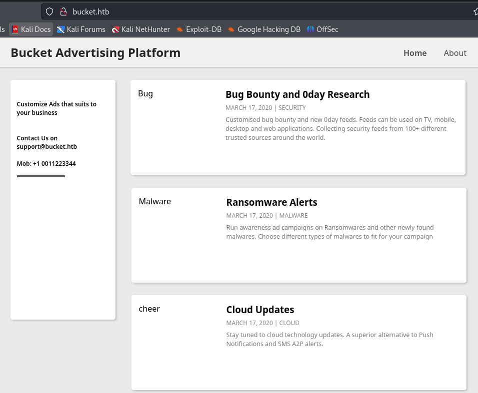
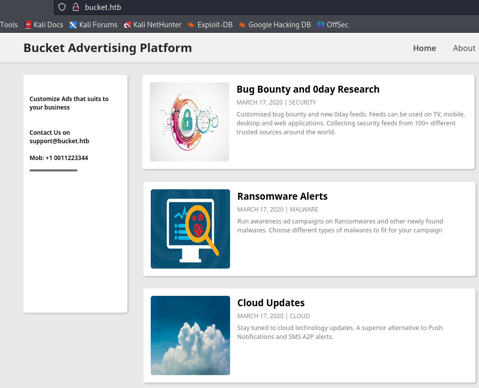
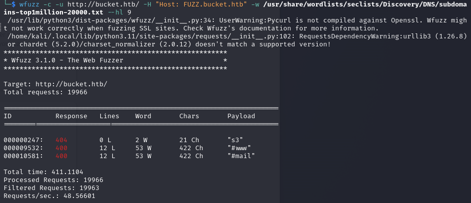

Bucket
└─$ sudo nmap 10.10.10.212 -p- --min-rate=10000 -T4 -sCV
PORT STATE SERVICE VERSION
22/tcp open ssh OpenSSH 8.2p1 Ubuntu 4 (Ubuntu Linux; protocol 2.0)
| ssh-hostkey:
| 3072 48:ad:d5:b8:3a:9f:bc:be:f7:e8:20:1e:f6:bf:de:ae (RSA)
| 256 b7:89:6c:0b:20:ed:49:b2:c1:86:7c:29:92:74:1c:1f (ECDSA)
|_ 256 18:cd:9d:08:a6:21:a8:b8:b6:f7:9f:8d:40:51:54:fb (ED25519)
80/tcp open http Apache httpd 2.4.41
|_http-title: Did not follow redirect to http://bucket.htb/
|_http-server-header: Apache/2.4.41 (Ubuntu)
Service Info: Host: 127.0.1.1; OS: Linux; CPE: cpe:/o:linux:linux_kernel
└─$ echo "10.10.10.212 bucket.htb" | sudo tee -a /etc/hosts
http://bucket.htb/ 
View source code
<article>
<div class="coffee">
<img src="http://s3.bucket.htb/adserver/images/bug.jpg" alt="Bug" height="160" width="160">
</div>
<div class="description">
<h3>Bug Bounty and 0day Research</h3>
<span>march 17, 2020 | Security</span>
<p>Customised bug bounty and new 0day feeds. Feeds can be used on TV, mobile, desktop and web applications. Collecting security feeds from 100+ different trusted sources around the world.</p>
</div>
</article>
<div class="articles">
<article>
<div class="coffee">
<img src="http://s3.bucket.htb/adserver/images/malware.png" alt="Malware" height="160" width="160">
</div>
<div class="description">
<h3>Ransomware Alerts</h3>
<span>march 17, 2020 | Malware</span>
<p>Run awareness ad campaigns on Ransomwares and other newly found malwares. Choose different types of malwares to fit for your campaign</p>
</div>
</article>
<article>
<div class="coffee">
<img src="http://s3.bucket.htb/adserver/images/cloud.png" alt="cheer" height="160" width="160">
</div>
<div class="description">
<h3>Cloud Updates</h3>
<span>march 17, 2020 | Cloud</span>
<p>Stay tuned to cloud technology updates. A superior alternative to Push Notifications and SMS A2P alerts. </p>
</div>
</article>
└─$ echo "10.10.10.212 s3.bucket.htb" | sudo tee -a /etc/hosts
Then, refresh the website, you will see images. 
email: support@bucket.htb
└─$ wfuzz -c -u http://bucket.htb/ -H "Host: FUZZ.bucket.htb" -w /usr/share/wordlists/seclists/Discovery/DNS/subdomains-top1million-20000.txt --hl 9

└─$ curl -v http://s3.bucket.htb/
* Trying 10.10.10.212:80...
* Connected to s3.bucket.htb (10.10.10.212) port 80
> GET / HTTP/1.1
> Host: s3.bucket.htb
> User-Agent: curl/8.4.0
> Accept: */*
>
< HTTP/1.1 404
< Date: Thu, 22 Feb 2024 01:15:14 GMT
< Server: hypercorn-h11
< content-type: text/html; charset=utf-8
< content-length: 21
< access-control-allow-origin: *
< access-control-allow-methods: HEAD,GET,PUT,POST,DELETE,OPTIONS,PATCH
< access-control-allow-headers: authorization,content-type,content-md5,cache-control,x-amz-content-sha256,x-amz-date,x-amz-security-token,x-amz-user-agent,x-amz-target,x-amz-acl,x-amz-version-id,x-localstack-target,x-amz-tagging
< access-control-expose-headers: x-amz-version-id
<
* Connection #0 to host s3.bucket.htb left intact
{"status": "running"}